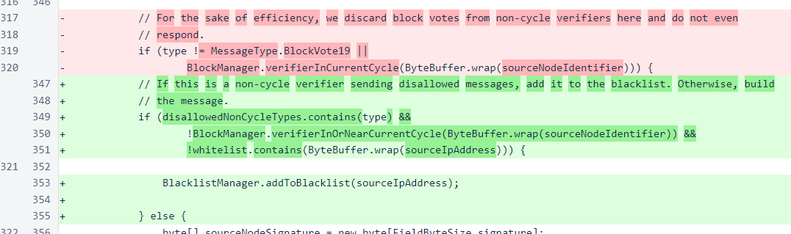
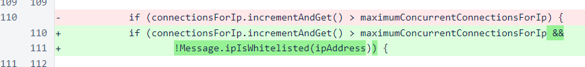
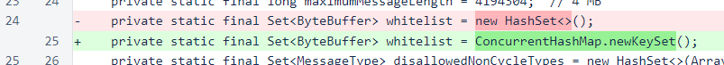
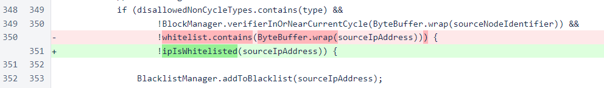
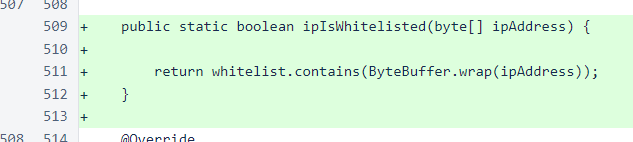

Nyzo version 497 (commit on GitHub) adds whitelisting to the concurrent-connections check.
This version does not need to be installed on the sentinel, as the sentinel does not use the MeshListener class. However, installing and correctly configuring this version on verifiers can help to ensure proper sentinel operation.
In version 495, dynamic blacklisting was added based on the number of incoming connections per IP. Version 496 increased the maximum number of connections per IP to provide more headroom for proper operation of the sentinel, and verifier0.nyzo.co was manually modified to allow up to 300 concurrent connections per IP address so that highly concurrent scripts using this verifier as a data source would not be blocked. This version adds whitelisting of particular IP addresses to this mechanism to provide certainty that a sentinel will not be blacklisted, even in exceptional circumstances, and to allow users of highly concurrent scripts to use their own verifiers as data sources for those scripts.
The whitelist mechanism has been in place since version 476, but it was not documented, and it was only used to allow out-of-cycle verifiers to send messages normally permitted only from in-cycle verifiers. Please note that the following image is a code diff from version 476, not from the current version.
In this version, the first change is the utilization of the whitelist from the MeshListener class. If an IP address is in the whitelist, the maximum number of concurrent connections does not apply.
In the Message class, the whitelist set has been changed to a concurrent set to improve thread safety.
In the check for disallowed non-cycle message types, the new ipIsWhitelisted() method is now used. This is for consistency and readability, and it does not change the behavior of the code.
The new ipIsWhitelisted() method is now the central source of information to determine which IP addresses should be excluded from blacklisting.
The whitelist configuration file is a plain text file, located at /var/lib/nyzo/production/whitelist. Each line contains an IP address and, optionally, a comment, preceded by a hash sign. The following shows what a typical whitelist file might look like. You do not need to whitelist the Nyzo web server on your verifier. This is only an example. You should only add your sentinel and any locations from which you want to run highly concurrent scripts. Whitelisting the Nyzo web server is not a problem, so don't worry about it if you have already done it, but it is also not necessary.
34.218.12.230 # nyzo.co web server 1.3.5.7 # sentinel on provider 1 2.4.6.8 # sentinel on provider 2 32.64.128.255 # my home IP, where I run scripts
When you restart your verifier, you can check the log file to ensure the IPs were loaded properly. To do this, run the following command.
more /var/log/nyzo-verifier-stdout.log | grep 'whitelist'
Note: the new configuration scripts, introducted in version 555, direct all output to a single file located at /var/log/nyzo-verifier.log. For verifiers configured using the new scripts, the following command should be run:
more /var/log/nyzo-verifier.log | grep 'whitelist'